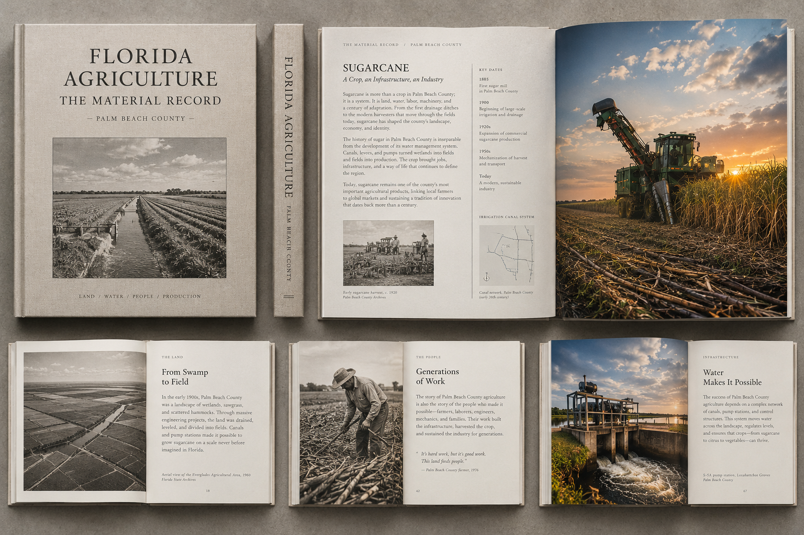
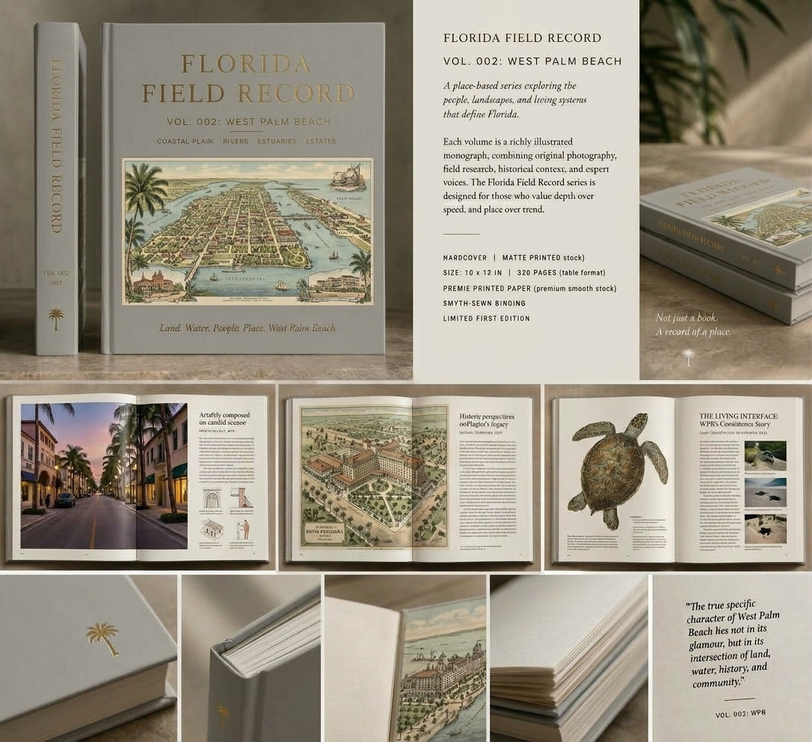

Current Project
P1Lab / Independent Documentary Publishing
Florida
Field Record
A collection of regional field records documenting Florida one place at a time.
Florida is not a single subject. It is a collection of distinct places, working environments, histories, cultures, landscapes, institutions, infrastructures, and communities.
Florida Field Record publishes those places as substantial independent books. Each regional volume establishes its own field of investigation and follows the physical and historical relationships discovered there.
The collection grows geographically. The record grows through research.
01 / The Collection
One state. Many fields.
Florida Field Record is the collection title. The individual books are regional field records: substantial documentary volumes devoted to particular Florida places.
A regional volume begins with a place and follows what the place contains.
A city, region, landscape, waterfront, historic district, or other defined field becomes the geographic boundary of the investigation.
Within that boundary, research determines what matters: the people who operate there, the work performed there, the structures and infrastructure, the objects and materials, the institutions, the histories, the environmental conditions, and the relationships connecting them.
Each volume stands independently. Together, the volumes form a continuing physical record of Florida.
02 / Regional Volumes
The books are the collection.
Regional volumes are independently researched and published as substantial physical books. The geographic field is defined first. The structure of the record emerges through investigation.
Palm Beach County Field
Florida Agriculture
Next Regional Field
Fort Lauderdale
Future Regional Volume
The Everglades
Future Regional Volume
The Keys
Palm Beach County Field Investigation
Florida
Agriculture
A focused field record of agriculture as a physical, historical, industrial, and cultural system within Palm Beach County.
The investigation follows the land, crops, water, machinery, processing systems, working landscapes, agricultural businesses, people, institutions, and histories that make the county's agricultural field legible.
Enter the Palm Beach County Agriculture Record →
Current Regional Investigation
West Palm
Beach
The first active regional field record in the collection. Research is examining the city through its working environments, waterfront, architecture, institutions, histories, cultural life, infrastructure, and the people who make those systems function.
Enter the West Palm Beach Field Record →
05 / The Volume
A place becomes a book.
A Florida Field Record volume is not a magazine, directory, advertising publication, or collection of unrelated profiles. It is a researched regional monograph.
Geographic Field
Begin with the place.
The geographic boundary establishes the field. Research then determines which realities within that field warrant sustained documentation.
Primary Evidence
Follow what is there.
Field observation, photography, firsthand interviews, archives, physical evidence, technical inquiry, maps, documents, and other primary materials form the record.
Independent Editorial Work
Research determines inclusion.
A regional volume is independently conceived and edited. Participation does not determine interpretation or purchase editorial conclusions.
Physical Publication
The record becomes a book.
The finished regional field record is produced as a substantial physical volume intended for ownership, collection, consultation, and long-term preservation.
06 / Method
Go there. Observe. Verify. Build the record.
Every regional volume is built through direct engagement with the physical field and the people who possess primary knowledge of it.
01 / Field Observation
Be there.
Direct site visits, physical inspection, photographic observation, and attention to material and spatial conditions.
02 / Primary Knowledge
Ask the people who know it.
Owners, workers, operators, craftspeople, historians, engineers, curators, builders, technicians, and long-term participants.
03 / Evidence
Cross-check the record.
Field observations are examined against documents, archives, physical evidence, technical literature, maps, and other available sources.
04 / Editorial Restraint
Document, don't promote.
The purpose is to make the physical reality of the field legible without turning the record into advertising.
07 / Participation
Independent books can have institutional participants.
Organizations whose work, history, facilities, collections, expertise, or operating environments form part of a regional field may participate in making its documentation possible.
Participation supports field research and physical production of a regional volume. It may include research access, documentary work, production underwriting, and institutional acquisition of finished books.
The resulting publication remains independently conceived and edited. Participation is not advertising and does not purchase favorable treatment, editorial control, or a predetermined place in the book.
The institution helps make the regional record possible. It does not buy an advertisement inside it.
Current Regional Investigations
Florida is being
recorded.
Explore the active regional field records, the research underway, the proposed books, and the ways organizations within those fields can participate in their production.
Explore the Current Fields →